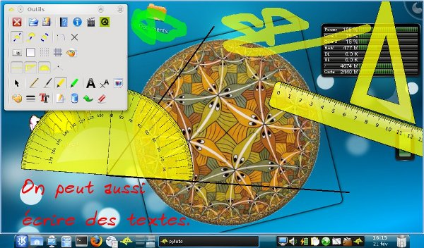
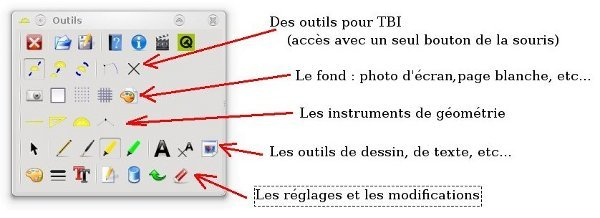

Pour dessiner sur l’écran et y manipuler les instruments de géométrie.
pylote est un logiciel permettant de dessiner sur l’écran de l’ordinateur, ainsi que de manipuler différents instruments de géométrie.
C’est un logiciel multiplateforme, libre (licence GNU GPL), fait en Python (langage de programmation) et PyQt4 pour l’interface graphique.

Le logiciel fonctionne avec une photo d’écran de l’ordinateur.
Sur cette image, on peut dessiner, écrire et manipuler des instruments de géométrie.
On peut aussi charger différents fonds.
Et bien d’autres choses…

On les déplace avec le bouton gauche de la souris.
Le bouton droit permet de les faire pivoter.
Le bouton du milieu (molette utilisée comme bouton) permet de les agrandir (ou rétrécir).
Mode TBI : par la boîte à outils, on peut modifier le comportement du bouton gauche de la souris, ce qui permet une utilisation avec une souris à un seul bouton (un stylet à infrarouge par exemple). Tous les outils sont ainsi accessibles.
un fichier d’aide complet et clair
une traduction de cette page, des commentaires du code et du fichier d’aide (celui qui n’est pas encore fait) en Anglais, car c’est nécesssaire pour internationaliser un logiciel.
Python est forcément déjà installé. Si PyQt4 ne l’est pas, il est disponible dans votre distribution (pour Ubuntu, c’est le paquet “python-qt4”).
Sylvain Bignon ([http://cdpmaths.free.fr->http://cdpmaths.free.fr]) qui m’a beaucoup aidé à améliorer ce programme compile une version installable pour windows. Vous la trouverez ici : [http://cdpmaths.free.fr/pylote/->http://cdpmaths.free.fr/pylote/]
Il vous faudra installer d’abord Python en choisissant “Python 2.6.1 Windows installer” (ou plus récent).
puis PyQt4 en choisissant “PyQt-Py2.6-gpl–4.4.4–2.exe” (ou plus récent) dans les “Binary Packages”.
Il faut installer depuis les mêmes pages qu’indiqué pour Windows, et ça m’intéresserait d’avoir des retours.
Il faut décompresser l’archive ci-dessous puis lancer le fichier “pylote.pyw”.
C’est du python, donc soit en cliquant dessus si les fichiers py et pyw sont associés à python, soit en console :
python pylote.pyw